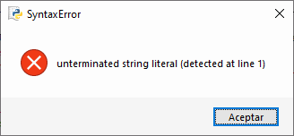
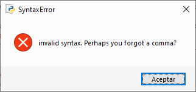

En esta lección y en la lección Cadenas de texto (2) se tratan el tipo de datos cadena de texto (string) en Python.
En esta lección se tratan los conceptos más básicos de las cadenas, para los que no es necesario conocer el concepto de variable.
Cadenas de texto
Una cadena es una secuencia inmutable de caracteres Unicode, delimitada por comillas.
Comillas simples y dobles
Las cadenas de texto se pueden delimitar con comillas simples (') o con comillas dobles ("):
>>>print('Esto es una cadena')
Esto es una cadena>>>print("Esto es una cadena")
Esto es una cadena
La función print(), que se comenta con más detalle en la lección Salida por pantalla, muestra por pantalla el contenido de la cadena, pero no las comillas delimitadoras de las cadenas.
En Python las comillas dobles y las comillas simples son completamente equivalentes, pero en otros lenguajes de programación no lo son.
En otros lenguajes de programación, por ejemplo en PHP, en las cadenas delimitadas con comillas dobles las variables se sustituyen por su valor y se pueden utilizar caracteres especiales, pero en las cadenas delimitadas con comillas simples, no. Aunque en la documentación de Python se utilizan casi siempre comillas simples, en estos apuntes se utilizan casi siempre las comillas dobles porque en PHP (el lenguaje de programación que se trabaja en 2º curso) se utilizan más las comillas dobles.
Las cadenas se deben cerrar con las mismas comillas con las que se abrieron, de lo contrario estaremos cometiendo un error de sintaxis:
>>>print("Esto es una cadena')SyntaxError: unterminated string literal (detected at line 1)>>>
En un programa, al intentar ejecutar el programa se abriría una ventana de error:
print("Esto es una cadena')
File "prueba.py", line 1
print("Esto es una cadena')
^
SyntaxError: unterminated string literal (detected at line 1)
En IDLE se muestra una ventana indicando el error:

Sin necesidad de ejecutar la orden o el programa, la forma en que IDLE colorea la orden nos ayuda a identificar que hay algo incorrecto en el programa. En el ejemplo anterior, el paréntesis de cierre se muestra de color verde, lo que indica que IDLE no identifica la comilla simple como cierre de la cadena abierta con comilla doble.
Comillas triples
Las comillas triples permiten que las cadenas ocupen más de una línea:
>>>print("""Esto es una cadena
que ocupa
varias líneas""")
Esto es una cadena
que ocupa
varias líneas
Pero las comillas triples se utilizan sobre todo con una finalidad específica: la documentación de módulos, funciones, clases o métodos. Son las llamadas docstrings, definidas en el PEP 257. Son cadenas que se escriben al principio del elemento describiendo lo que hace el elemento. No producen ningún resultado en el programa, pero las herramientas de documentación de Python pueden extraerlas para generar documentación automáticamente.
def licencia():
"""Escribe la licencia de estos apuntes"""
print("Copyright 2013 Bartolomé Sintes Marco")
print("Licencia CC-BY-SA 4.0")
return
Comillas dentro de comillas
Se pueden escribir comillas simples en cadenas delimitadas con comillas dobles y viceversa:
Pero no se pueden escribir en el interior de una cadena comillas del mismo tipo que las comillas delimitadoras:
>>>print("Las comillas dobles "delimitan cadenas")SyntaxError: invalid syntax. Perhaps you forgot a comma?>>>
>>>print('Las comillas simples 'delimitan cadenas')SyntaxError: invalid syntax. Perhaps you forgot a comma?>>>
El motivo es que Python entiende que la comilla escrita en medio de la cadena está cerrando la cadena y no puede interpretar lo que viene a continuación. Sin necesidad de ejecutar la orden o el programa, la forma en que IDLE colorea la orden así nos lo indica.
En un programa, obtendríamos también una ventana de error de sintaxis. Dependiendo del número y la posición de las cadenas, el mensaje de error puede ser distinto:
print("Las comillas dobles " delimitan cadenas")
File "prueba.py", line 1
print("Las comillas dobles " delimitan cadenas")
^^^^^^^^^^^^^^^^^^^^^^^^^^^^^^^^
SyntaxError: invalid syntax. Perhaps you forgot a comma?
En IDLE se muestra una ventana indicando el error:

print('Un tipo le dice a otro: '¿Cómo estás?'')
File "prueba.py", line 1
print('Un tipo le dice a otro: '¿Cómo estás?'')
^
SyntaxError: invalid character '¿' (U+00BF)
En IDLE se muestra una ventana indicando el error:
Otra forma de escribir comillas en una cadena es utilizar los caracteres especiales \" y \' que representan los caracteres comillas dobles y simples respectivamente y que Python no interpreta en ningún caso como delimitadores de cadena:
Se pueden utilizar ambos caracteres especiales independientemente del delimitador utilizado
>>>print('Las comillas simples \' y las comillas dobles \" delimitan cadenas.')Las comillas simples ' y las comillas dobles " delimitan cadenas.>>>print("Las comillas simples \' y las comillas dobles \" delimitan cadenas.")
Las comillas simples ' y las comillas dobles " delimitan cadenas.
Caracteres especiales
Los caracteres especiales empiezan por una contrabarra (\).
>>>print("Una línea\nOtra línea")
Una línea
Otra línea
Tabulador: \t
>>>print("1\t2\t3")
1 2 3
Por completar con todos los caracteres especiales
Evaluación de cadenas en el prompt de IDLE
En el prompt de IDLE se pueden escribir cadenas sueltas, sin necesidad de escribir la función print(). Al pulsar Intro, IDLE evalúa la cadena y escribe el resultado, como hace cuando se escribe una expresión aritmética.
En la mayoría de los casos IDLE escribe el resultado entre comillas simples, para indicar que se trata de una cadena.
>>>"Esto es una cadena"'Esto es una cadena'>>>'Esto es una cadena''Esto es una cadena'
Si el resultado contiene únicamente comillas simples, IDLE lo escribe entre comillas dobles.
Pero si aparecen ambas comillas, IDLE lo escribe entre comillas simples y las comillas simples se muestran como caracteres especiales.
>>>'Las comillas simples \' y dobles \" delimitan cadenas.''Las comillas simples \' y dobles " delimitan cadenas.'>>>"Las comillas simples \' y dobles \" delimitan cadenas."'Las comillas simples \' y dobles " delimitan cadenas.'
Cadenas largas
De acuerdo con la guía de estilo oficial de Python, las líneas de código no deben contener más de 79 caracteres, para facilitar la legibilidad.
Si un programa contiene cadenas muy largas, las cadenas se pueden simplemente partir en varias cadenas.
>>>print("Esta línea está cortada en dos líneas de menos de 79 caracteres ""partiendo la cadena en dos")
Esta línea está cortada en dos líneas de menos de 79 caracteres partiendo la cadena en dos
También se puede escribir el carácter contrabarra (\) para partir una cadena en varias líneas.
>>>print("Esta línea está cortada en dos líneas de menos de 79 caracteres \partiendo la cadena en dos")
Esta línea está cortada en dos líneas de menos de 79 caracteres partiendo la cadena en dos
En los programas en los que hay bloques, la segunda notación hace más difícil la lectura del programa.